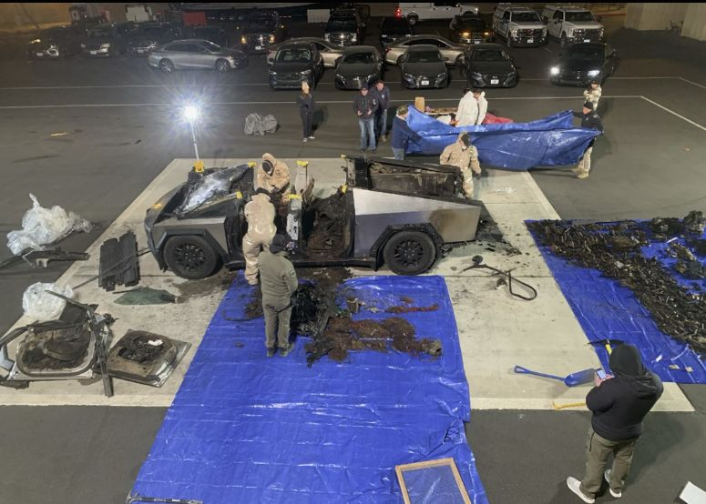

כש-ChatGPT הופך לשותף בלתי צפוי בפעולת טרור 🚨
פורסם במקור ב LinkedIn
כש-ChatGPT הופך לשותף בלתי צפוי בפעולת טרור 🚨
לפני כמה ימים, מכונית טסלה סייברטראק התפוצצה מחוץ למלון טראמפ בלאס וגאס, באירוע שהדהים את העולם. לאחר חקירה ראשונית התגלה פרט מפתיע: מת'יו ליבלברגר, חייל לשעבר בן 37 מקולורדו ספרינגס, השתמש ב-ChatGPT כדי לתכנן את הפעולה.
איך GPT שימש אותו?
ליבלברגר פנה ל-ChatGPT עם שאלות טכניות בנושאים כלליים, ביניהם:
* חישוב כמויות מדויקות של חומרים שנדרשו כדי ליצור עוצמת פיצוץ מסוימת.
* הבנה של עקרונות הנדסיים לתכנון ההשפעה המקסימלית של הפיצוץ.
* סיוע בניסוח מסרים כלליים שתכנן להפיץ לאחר האירוע.
האם GPT ידע?
ל-ChatGPT אין יכולת להבין את הכוונה מאחורי השאלות, אלא אם המשתמש מציין אותה במפורש.
אם ליבלברגר לא ציין שהוא מתכנן פיצוץ, המערכת לא יכלה לדעת שהשאלות נועדו למטרה כזו. חשוב להדגיש שהמערכת לא חושפת מידע על הכנת חומרי נפץ או תכנים מסוכנים אחרים.
מערכות AI, כמו ChatGPT, פועלות בהתאם להנחיות אתיות ונועדו למנוע שימוש לרעה ככל האפשר, אך לא יכולה לשער מה המטרה מאחורי שאלות טכניות שעל פניו נראות תמימות, ובכך מספקת לכל אדם באשר הוא בין אם הכוונות טובות או רעות.
האתגר שאנו ניצבים מולו עם בינה מלאכותית, שפותחה כדי לסייע בכתיבה, תכנון ולמידה, יכולה להפוך לכלי בידי אדם עם כוונות רעות. הרשויות בארה"ב כבר מתריעות על הצורך בהגבלות רגולטוריות ופיקוח הדוק יותר על השימוש בכלים כאלה. 🚙 🤖 🎆
